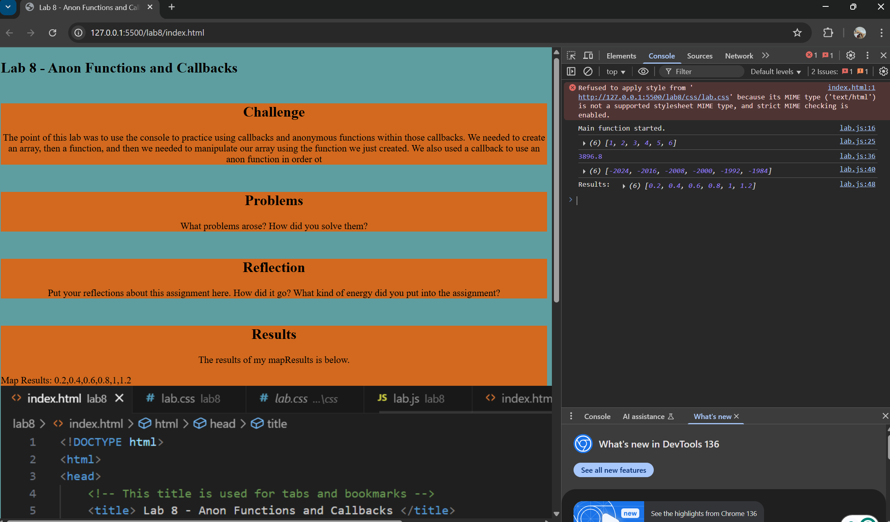

Lab 8 - Anon Functions and Callbacks
Challenge
The point of this lab was to use the console to practice using callbacks and anonymous functions within those callbacks. We needed to create an array, then a function, and then we needed to manipulate our array using the function we just created. We also used a callback to use an anon function in order ot
Problems
I had some problems trying to figure out where to include the links into the header, but I think by default for this template, it was already in the correct place. So although I did add it in, I looked through the code to see if there was somethign similar happening, and when I noticed I just deleted what I added and left it as is, and a lot of the errors in the console disappeared. I also had a bit of trouble trying to show the callback function that I created in the console, and when I asked the internet how to put it in the console, they suggested directly putting console.log in front of the code. So, I did that and it showed up in my console thankfully. I also tried my hand at trying to show the results for mapResults, and it sort of worked, but it doesn't have any spaces in between and I wanted to show more results. I didn't know how to, so I tried messing around with the code to no avail, so it just simply shows the results for mapResults.
Reflection
I think I had a lot of fun with this lab, and it makes me want to explore further what I can do with HTML and JavaScript. I think that I really tried to mess around with my console and my JavaScript by creating two different functions for each to showcase.
Results
The results of my mapResults is below.
This is the picture of including the css and js into my heading.
This is a screenshot of the first part of messing around in the console.
This is a screenshot of the second part of my screenshot in my console.
This is a screenshot of my JaveScript.
This is a screenshot of the results in my console on my website, and also the Bonus Task X show in the results section.